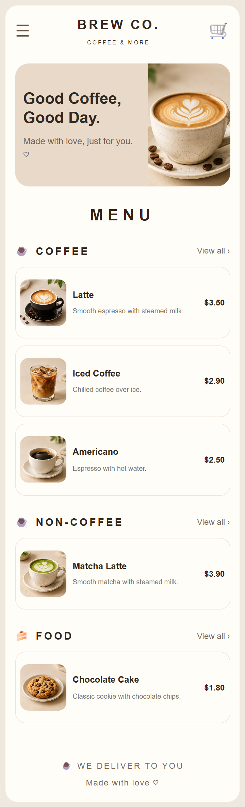

01 / FULL-STACK DEVELOPMENT

Brew Co. QR Menu
The Problem
Coffee shops need an accessible digital menu that can be updated without manually changing website code.
My Contribution
I developed a database-driven digital menu and admin dashboard to manage categories, menu items, prices, images, and availability. I implemented CRUD operations and connected the frontend to a MySQL database.
Technical Challenge
I resolved database relationship errors, corrected SQL column mismatches, and fixed image-path issues to ensure the menu and admin dashboard displayed consistent data.